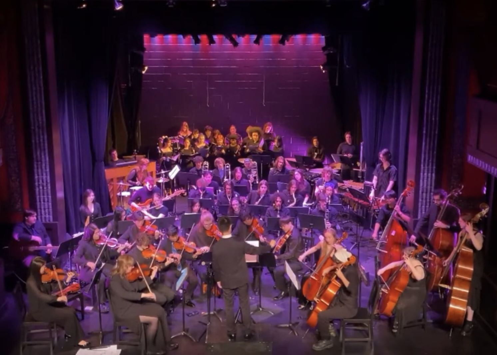
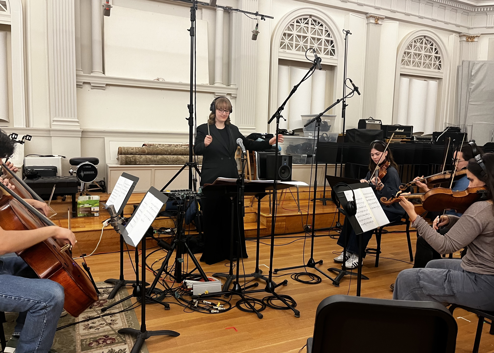
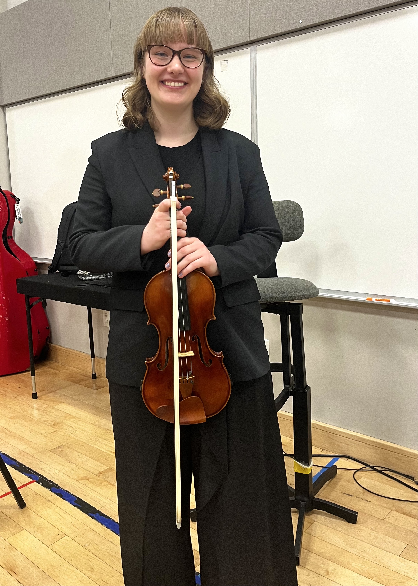
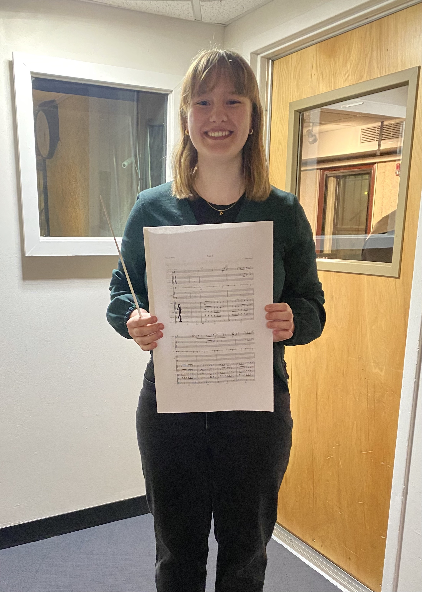
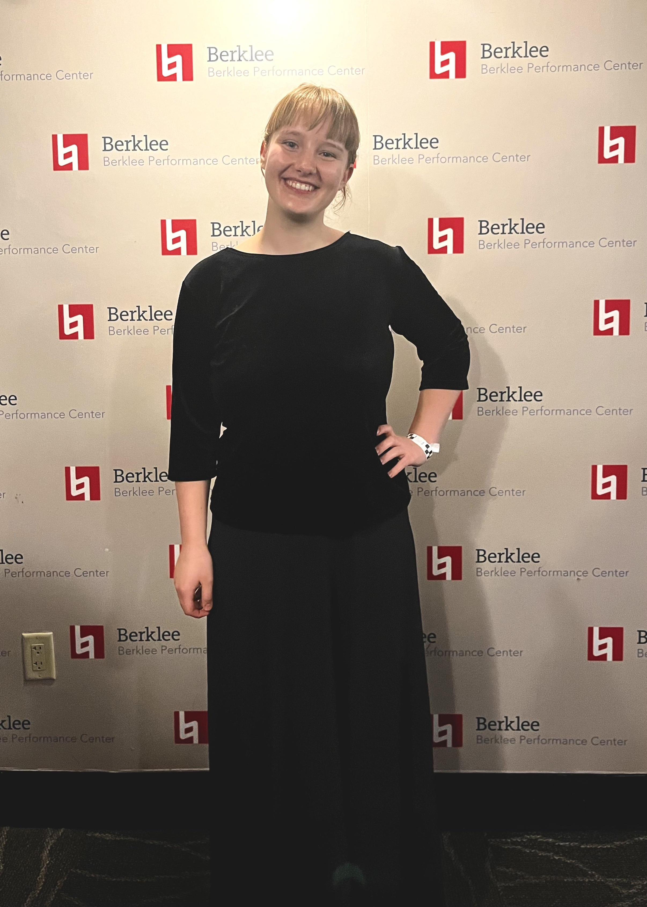
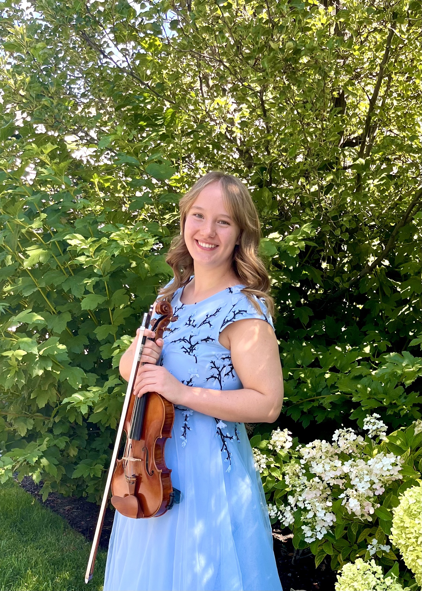
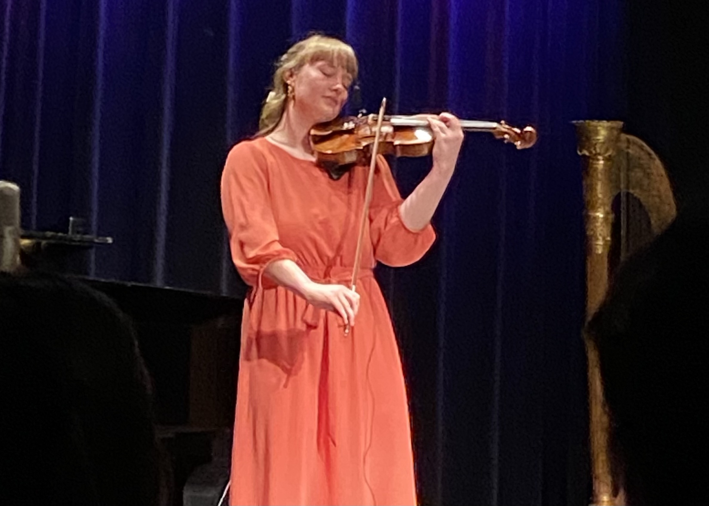
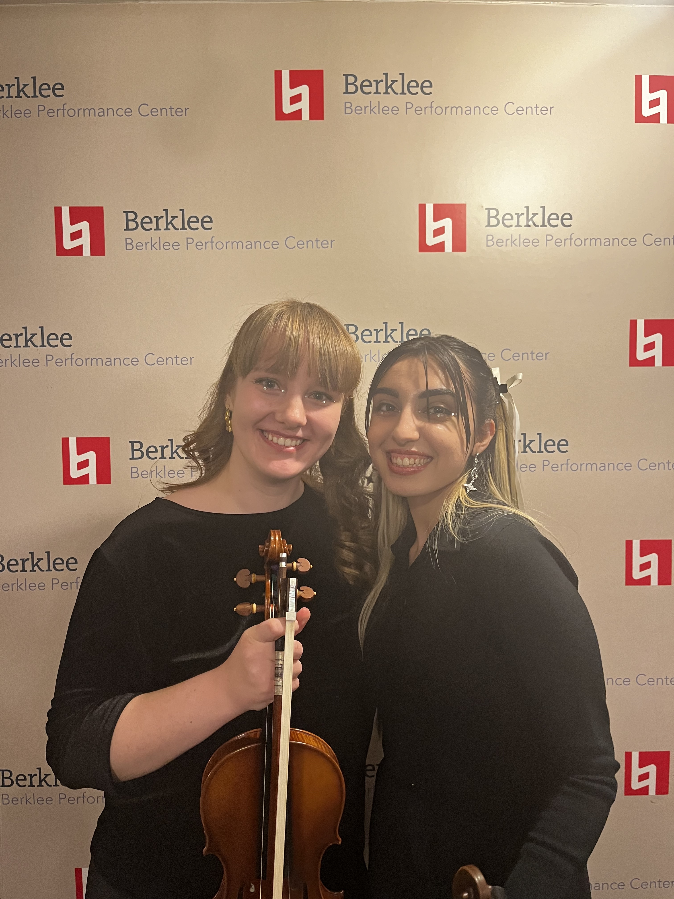
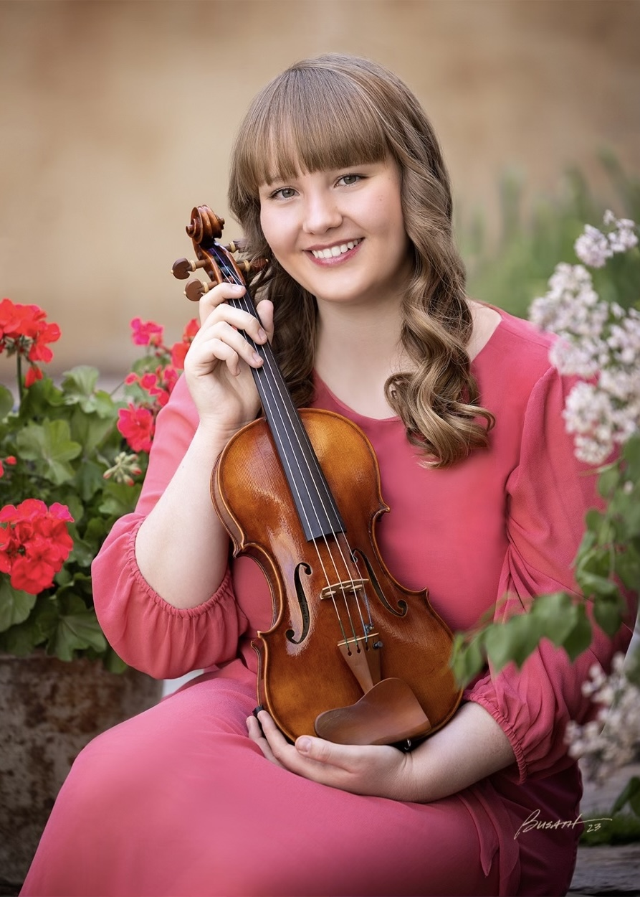

Photos
Song of the Fish, a composition by Claire Mayfield

Audire Concert, April 2025

Berklee Recording Session, April 2025

Berklee World Strings Concert, March 2025

Berklee Recording Session, February 2025

Berklee World Strings Concert, September 2024

Solo Recital, August 2024
Headshot, April 2024

Berklee String Department Recital, March 2024

Berklee World Strings Tour, February 2024

Senior Pictures, May 2023